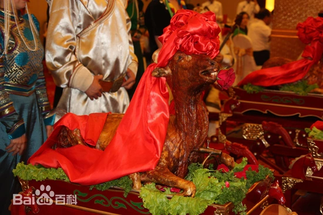
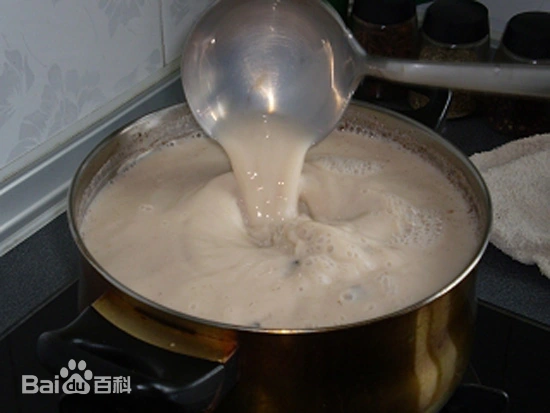
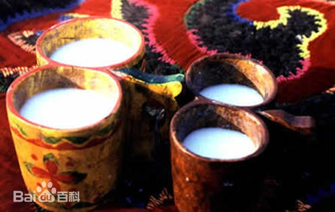

著名美食

杜尔伯特 烤全羊
传统肉制食品主要有：布合勒：意为“全”或“整个”，是指全羊宴。
牧区蒙古族的肉食，主要是绵羊肉、山羊肉、牛肉。过去，冬季猎取黄羊、狍子、野猪、野兔、山鸡等做食品，已少见。牧民宰杀牲畜是有季节性的。农历五月以后，水草繁盛，牛羊已肥，开始宰杀，但不是大量的，随吃随时杀，保证日常肉食即可，一般不杀牛。
了解更多

杜尔伯特奶茶
奶茶也叫苏台切，奶茶的种类很多。据文献记载，早在1300年前，就已经有健身止血、治疗失眠症的“酸枣稀饭”。
有提高视力和听觉的“嘎仁萨面茶”；有通宣理肺的“西仁宝日玛汤”等等种类的奶茶。而“玉盘茶”“金字茶”“西番茶”则是蒙古大帝皇宫中佳茗。蒙古高原可以用来做茶的植物很多，就地取材煮制奶茶，各有千秋。杜尔伯特地区的奶茶，与其他蒙古地区的奶茶不同。奶茶有解除疲劳，促人兴奋，增强食欲，帮助消化，降低血压，防止动脉硬化等作用。而阿巴嘎茶，除了上述功效外，还能治疗感冒等病，是上乘补品和饮料。
了解更多

杜尔伯特 马奶酒
奶酒，蒙古语称“阿日里”。奶酒的特点是澄澈醇香，沁人心脾，酒性柔软，口感酸甜。
初饮时觉得酒力不大，可是后劲很足。一顿能喝一瓶啤酒的人，喝奶酒一公斤以上便会大醉。奶酒有驱寒、活血、舒筋、补肾、健胃、养脾、强骨等功效。
了解更多杜尔伯特奶制品
奶食品主要以牛、羊、马、驼的奶为原料。在牧区，以牛奶为上品，产用量较大，羊奶次之。
用马奶、驼奶者少。产奶旺季，奶牛每天挤两次。奶羊（主要是山羊）每天一次。枯草期，奶牛每天中午挤一次，奶羊不再挤奶。刚挤下的奶称鲜奶或生奶，可直接饮用、泡炒米或煮奶茶它是牧民一年四季不可缺少的奶食品。把查嘎用锅靠干水分，制成固体状酸奶，称“阿嘎如勒”。
了解更多2024 我的家乡网页